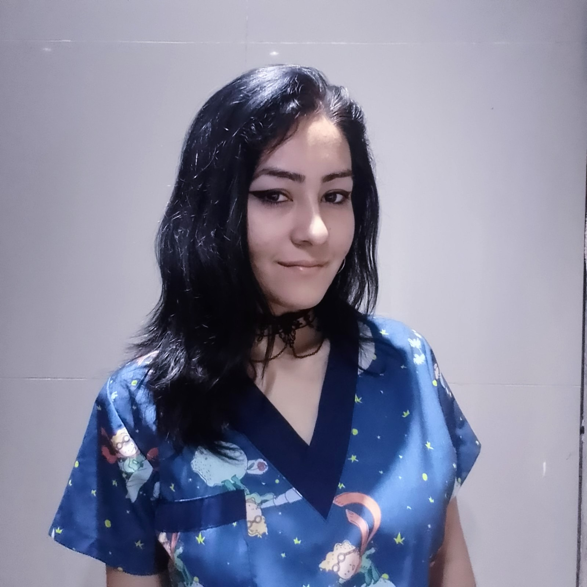

Acompañante Terapéutica · Diplomatura en Acompañamiento Terapéutico, Universidad Maza
Trabajo como Acompañante Terapéutica y he acompañado a niños de forma domiciliaria y escolar.
Soy de trato tranquilo, observadora y con mucha paciencia. Me gusta crear un vínculo de confianza primero, porque creo que sin vínculo no hay trabajo posible. Me adapto a cada niño y a cada familia, y soy muy ordenada con la comunicación: si algo pasa, lo comunico; si algo funciona, lo sostengo.
Me interesa que el niño/a pueda sentirse más seguro, más autónomo y más parte del grupo, y que la familia también se sienta acompañada en el proceso.
Tengo experiencia en acompañamiento en contexto escolar y domiciliario, con conocimiento del funcionamiento de ambos espacios.
Mi trabajo se da en contacto constante con la familia, profesionales de la salud y equipos escolares, incluyendo directivos y docentes, para sostener un abordaje coordinado.
Me enfoco en trabajar las rutinas con apoyos visuales como pictogramas, realizar ajustes en las tareas para favorecer la comprensión y elaborar material didáctico para enseñar de forma alternativa.
Para regular momentos de tensión utilizo herramientas como la caja de la calma y zonas seguras, que permiten contener momentos de crisis sin exponer al niño/a.
Tanto los momentos de crisis como los avances diarios y mensuales son registrados, con el objetivo de informar, reflexionar sobre qué estrategias aplicar, mantener o reemplazar, y avanzar hacia los objetivos pactados.
Mi forma de trabajar es a través de la rutina, la anticipación y la calma. Mi enfoque principal es que el niño/a logre avances hacia su autonomía, brindar un acompañamiento para sostener una jornada rutinaria, entender qué le pasa y encontrar formas de regularse cuando aparece la frustración, el enojo o la desregulación.
En la práctica, eso se traduce en:
Acompañamiento en clase y en las actividades, sin reemplazar al docente ni al niño/a.
Trabajo en conducta y regulación emocional, con estrategias claras y acordadas.
Apoyo en la rutina, la organización y la autonomía.
Fomento de la integración social con compañeros y docentes.
Registro de lo que observo y comunicación constante con la familia y el equipo.
Trabajo en equipo con coordinadora, psicoterapeuta, psicopedagoga y terapeuta ocupacional, etc., intercambiando información que nutra el servicio que se brinda y lograr avances coordinados.
Completá el formulario y me pondré en contacto con vos.
También podés escribirme o llamarme directamente.